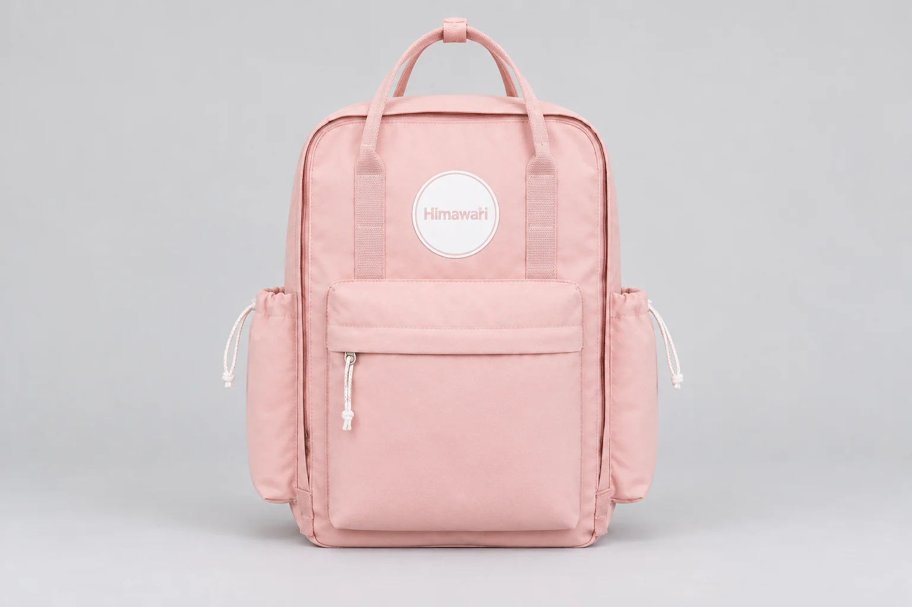
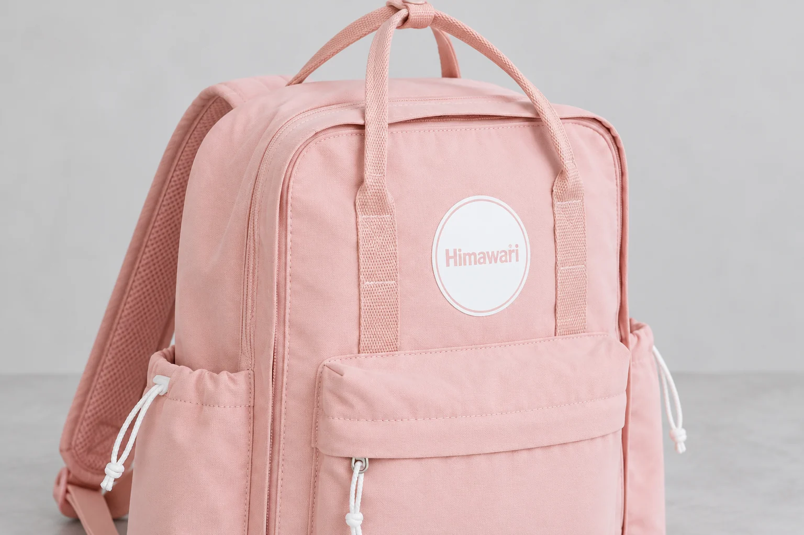

백팩 지퍼의 이빨은 모두 같을까, 금속·코일·사출을 나누어 읽기

백팩의 지퍼를 보며 금속 부품이 반짝이니 금속 지퍼라고 부르기 쉽습니다. 하지만 손으로 잡는 부품과 양쪽에서 맞물리는 줄은 서로 다른 부분입니다. 가방을 고를 때 지퍼에 관한 설명을 읽으려면 그 이름이 어느 부품을 가리키는지부터 구별해야 합니다. 겉감이 무엇인지 알려주는 표만으로 지퍼의 구성까지 정해지지는 않습니다.
No.1089 핑크의 원본 사진에는 큰 입구와 앞주머니 주변의 분홍색 지퍼, 앞주머니에서 잡는 흰 끈이 보입니다. 이 글은 그 사진에서 부품의 재료나 제조사를 확정하는 글이 아닙니다. 지퍼 제조사 YKK가 공개한 일반적인 구조 구분을 가방을 살펴볼 때 쓸 말로 정리합니다. No.1089에 YKK 부품이나 아래 특정 종류가 사용됐다는 근거는 확인하지 않았습니다.
가방 입구에서 세 부분을 먼저 구별합니다
YKK의 지퍼 구조 설명은 기본 요소를 맞물리는 부분인 엘리먼트, 이를 여닫는 슬라이더, 원단 부분인 테이프로 나눕니다. 가방에서 손잡이나 끈을 잡아 움직이면 슬라이더가 이동하고 그 이동에 따라 양쪽 엘리먼트가 맞물리거나 벌어집니다. 손에 닿는 부분이 눈에 잘 띄더라도 그 부품 하나가 지퍼 전체의 재료를 대표하지는 않습니다.
백팩 사진을 읽을 때에도 같은 구분을 적용할 수 있습니다. 지퍼 주변의 넓고 납작한 천 띠, 가운데 이어지는 맞물림 줄, 손잡이와 함께 움직이는 부분을 각각 찾는 식입니다. 특히 몸판과 비슷한 색의 테이프를 쓰면 가방 원단과 한 부분처럼 보일 수 있습니다. 사진에 분홍색이 이어져 보인다는 관찰과 그 부분이 어떤 재료로 만들어졌다는 판단은 나누어 둡니다.
앞주머니에 끈 손잡이가 달린 모습도 지퍼 종류를 정하는 근거가 되지는 않습니다. 끈이 보이는 부분, 끈이 연결된 부품, 실제로 맞물리는 줄을 구별하지 않으면 끈의 소재를 지퍼 전체의 소재로 잘못 옮길 수 있습니다. 가방의 색 조합을 고르는 질문과 입구 부품의 구조를 확인하는 질문은 다릅니다. 같은 확대 사진에서도 각각 다른 부분을 살펴봅니다.
금속·코일·사출은 맞물리는 부분을 나누는 말입니다
YKK 일본의 기초 안내는 지퍼를 금속 엘리먼트 방식, 수지로 된 코일 방식, 테이프에 수지 엘리먼트를 사출한 방식으로 크게 구분합니다. 코일은 수지가 감긴 형태로 이어지는 구조이며 사출 방식은 테이프에 만들어 붙이는 엘리먼트를 설명합니다. 이 구분은 단순히 큰 지퍼와 작은 지퍼를 나누는 이름이 아닙니다.
따라서 백팩의 두 입구에서 이빨 크기가 달라 보인다고 곧바로 서로 다른 종류라고 정할 수는 없습니다. 반대로 전체 색상이 비슷해 보인다고 같은 구조라는 뜻도 아닙니다. 종류를 읽으려면 맞물리는 부분의 실제 구조와 해당 부품의 안내가 필요합니다. 화면의 작은 사진에서 줄이 연속으로 보인다는 이유만으로 코일이라고 단정하는 일도 피합니다.
금속이라는 말에도 적용 범위가 있습니다. 지퍼 손잡이에 금속이 쓰였다는 설명과 엘리먼트가 금속이라는 설명은 다릅니다. 판매 페이지의 문구가 부품 전체를 뭉뚱그려 적었다면 어느 부분의 재료인지 확인해야 합니다. 백팩의 겉감이 나일론이라고 해서 그 문구를 지퍼 테이프나 엘리먼트의 재료까지 확장하지도 않습니다.
큰 입구와 앞주머니를 같은 정보로 묶지 않습니다
한 백팩 안에서도 큰 입구와 작은 앞주머니는 위치와 크기가 다릅니다. 각각에 쓰인 지퍼가 같은 규격인지 다른지는 실제 안내를 보아야 합니다. 큰 입구 한 곳의 사진을 보고 다른 주머니에도 같은 부품이 사용됐다고 옮겨 적으면 확인 범위를 넘어갑니다. No.1089의 닫힌 외형 사진도 모든 여밈의 세부 규격을 한꺼번에 알려주는 자료는 아닙니다.
구매자가 부품 정보를 기록한다면 모델과 색상 뒤에 입구 위치를 붙여 적을 수 있습니다. 큰 칸의 윗지퍼인지 앞주머니의 가로 지퍼인지 말하는 것만으로도 질문이 분명해집니다. 구조 이름이 적힌 자료를 받았을 때에는 그 자료가 어느 입구에 해당하는지 함께 확인합니다. 단어 하나를 외우는 것보다 가방의 어느 부위와 연결되는지 아는 쪽이 실제 비교에 필요합니다.

지퍼 종류를 가방의 품질 순위로 바꾸지는 않습니다
부품 이름을 알아본 뒤에도 사진의 위아래를 바꾸어 보거나 가방을 뒤집어 보라는 뜻은 아닙니다. 가방을 손상시키지 않는 범위에서 이미 공개된 자료를 읽는 일과 부품을 분리해 살펴보는 일은 구분해야 합니다. 특히 지퍼 끝의 부품을 빼거나 맞물림 줄을 벌려 종류를 알아보는 방식은 이번 설명의 범위가 아닙니다. 이름을 확인하려고 실제 입구를 다룰 때에도 해당 제품의 사용 안내를 우선합니다.
금속·코일·사출이라는 구분만으로 어느 백팩이 더 오래 쓰이는지 정할 수는 없습니다. YKK의 구조 설명도 지퍼가 여닫히는 데 부품의 모양과 치수가 중요하다고 설명합니다. 종류 이름 하나를 가방 전체의 내구성이나 보호 성능으로 바꾸어 읽을 근거는 아닙니다. 구체적인 성능이 필요하다면 그 제품에 관한 실제 자료가 있어야 합니다.
물에 관한 설명도 별도로 봅니다. 지퍼의 구조 이름만으로 비가 들어오지 않는다고 판단하지 않습니다. 가방의 원단, 봉제와 여밈에 관한 확인 범위가 각각 다를 수 있기 때문입니다. 이번 구분은 방수 등급이나 관리 방법을 대신 제시하려는 것이 아닙니다. 부품에 익숙하지 않은 상태에서 이름을 잘못 옮겨 쓰는 일을 줄이는 데 목적이 있습니다.
No.1089 핑크를 살펴볼 때에도 몸판과 손잡이, 둥근 로고의 외형은 제품 사진으로 확인하고 지퍼의 세부 재료는 별도의 정보로 남겨 둘 수 있습니다. 손에 잡는 끈이 무엇인지, 움직이는 부품이 어디인지, 실제로 맞물리는 줄이 어떤 구조인지 나누어 보세요. 가방의 지퍼를 통째로 한 재료라고 부르던 말이 구체적인 부위 이름으로 바뀌면 필요한 제품 정보를 더 정확히 찾을 수 있습니다.